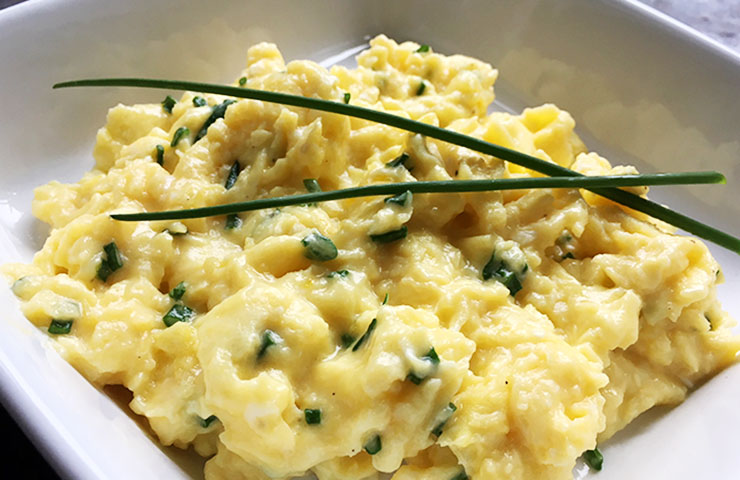

Scrambled eggs

An easy and classic breakfast!
Ingredients
Steps
- Crack your eggs and whisk them in a small bowl until creamy
- Heat a skillet on medium heat and pour your eggs in
- Using a whisk or wooden spoon, whisk the eggs never letting them curdle. Everyone 20 seconds remove the skillet from the heat and continue whisking for 10 seconds.
- Continue the above step until your desired consitency is reached. If you prefer slightly firmer eggs, stop whisking once they are close to your desired consitency.